화학분석기사 (2020-08-22 기출문제)
1과목: 화학분석 과정관리
1. 분석 작업 표준지침서에 따라 표준 시료를 제조하는 다음의 설명 중 적합하지 않은 것은? (단, 표준저장용액은 100mg/L의 농도를 조제하는 것을 기준으로 한다.)
- 카드뮴(Cd)의 표준저장용액은 4mL 진한 HNO3에 카드뮴 금속 0.100g을 녹인 후, 진한 HNO3 5mL를 첨가하고, 증류수를 가하여 1000mL로 만든다.
- 철(Fe)의 표준저장용액은 10mL의 50% HCl과 5mL의 진한 HNO3의 혼합물에 철 와이어 0.150g을 녹이고, 5mL 진한 HNO3을 첨가한 후 증류수를 가하여 1000mL로 만든다.
- 납(Pb)의 표준저장용액은 소량의 HNO3에 Pb(NO3)2 0.1598g을 녹이고, 증류수를 가하여 1000mL로 만든다.
- 나트륨(Na)의 표준저장용액은 증류수에 NaCl 0.2542g을 녹이고, 10mL 진한 HNO3을 첨가한 후 증류수를 가하여 1000mL로 만든다.
(정답률: 62%)

2. 다음 표준규격에 관한 설명 중에서 옳은 것으로만 짝지어진 것은?
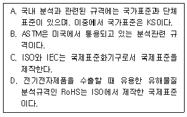
- A, B
- A, B, C
- A, C, D
- A, B, C, D
(정답률: 58%)
3. 금속 이온과 불꽃 반응색이 잘못 짝지어진 것은?
- 나트륨 - 노란색
- 리튬 - 빨간색
- 칼륨 - 황록색
- 구리 - 청록색
(정답률: 79%)
4. 분석 장비에 관한 설명 중 옳은 것은?
- 전류계는 분석물을 산화 또는 환원하는데 필요한 전하를 공급하는 장치로 교류전원을 많이 사용한다.
- pH 미터는 가스전극을 사용하므로 취급에 각별히 주의하여야 한다.
- 질량분석기는 분석물을 이온화하여 질량 대 전하비를 측정하는 장치이다.
- GC는 GLC와 GSC로 나뉘는데 두 기기의 차이는 분석물의 상(phase)이다.
(정답률: 60%)
5. 기기분석법에서 분석방법에 대한 설명으로 가장 옳은 것은?
- 표준물 첨가법은 미지의 시료에 분석하고자 하는 표준물질을 일정량 첨가해서 미지 물질의 농도를 구한다.
- 내부표준법은 시료에 원하는 물질을 첨가하여 표준 검량선을 이용하여 정량한다.
- 정성분석 시 검량선 작성은 필수적이다.
- 정량분석은 반드시 기기분석으로만 할 수 있다.
(정답률: 68%)
6. 0.10M KNO3용액에 관한 설명으로 옳은 것은?
- 이 용액 0.10L에는 6.02×1022의 K+이온들이 존재한다.
- 이 용액 0.10L에는 6.02×1023의 K+이온들이 존재한다.
- 이 용액 0.10L에는 0.010몰의 K+이온들이 존재한다.
- 이 용액 0.10L에는 1.0몰의 K+이온들이 존재한다.
(정답률: 75%)
7. 불포화 탄화수소에 속하지 않는 것은?
- alkane
- alkene
- alkyne
- arene
(정답률: 81%)
8. C2H5OH 8.72g을 얼렸을 때의 △H는 약 몇 kJ인가? (단, C2H5OH열은 4.81kJ/mol이다.)
- +0.9
- -0.9
- +41.9
- -41.9
(정답률: 64%)
9. 벤젠을 실험식으로 옳게 나타낸 것은?
- C6H6
- C6H5
- C3H3
- CH
(정답률: 75%)
10. 1.87g의 아연금속으로부터 얻을 수 있는 산화아연의 질량(g)은? (단, Zn : 65g/mol, 산화아연의 생성반응식 2Zn(s) + O2(g) → 2ZnO(s)이다.)
- 1.17
- 1.50
- 2.33
- 4.66
(정답률: 74%)
11. 기체에 대한 설명 중 틀린 것은?
- 동일한 온도 조건에서는 이상기체의 압력과 부피의 곱이 일정하게 유지되면 이를 Boyle의 법칙이라고 한다.
- 기체 분자 운동론에 의해 기체의 절대온도는 기체 입자의 평균 운동 에너지의 척도로 나타낼 수 있다.
- Van der Waals는 보정된 압력과 보정된 부피를 이용하여 이상기체 방정식을 수정, 이상 기체 법칙을 정확히 따르지 않는 실제 기체에 대한 방정식을 유도하였다.
- 기체의 분출(effusion) 속도는 입자 질량의 제곱근에 정비례하며 이를 Graham의 확산법칙이라고 한다.
(정답률: 70%)
12. 0.120mol의 HC2H3O2와 0.140mol의 NaC2H3O2가 들어 있는 1.00L 용액의 pH는? (단, HC2H3O2의 Ka = 1.8×10-5이다.)
- 3.81
- 4.81
- 5.81
- 6.81
(정답률: 67%)
13. 시클로알칸류 탄화수소에 대한 설명 중 틀린 것은?
- 시클로알칸은 탄소고리 모양을 갖고 있으며 일반식은 CnH2n+2로 나타낸다.
- 시클로프로판과 시클로부탄은 결합각이 109.5도에서 크게 벗어나 있어 결합각 스트레인(angle strain)을 갖는다.
- 시클로헥산의 conformation은 크게 보트(boat)형과 의자(chair)형으로 구별되며 에너지 상태는 의자형이 낮다.
- methylcyclohexane의 메틸기와 하나 건너 탄소와 결합된 수소 원자 사이에 존재하는 입체 반발력을 1,3-이축방향 상호작용이라 부른다.
(정답률: 71%)
14. 고분자의 생성 메카니즘(축합, 중합)이 나머지 셋과 다른 하나는?
- 나일론(nylon)
- PVC(polyvinyl chloride)
- 폴리에스터(polyester)
- 단백질(protein)
(정답률: 54%)
15. 원자와 분자의 결합에 대한 다음 설명 중 옳은 것은?
- 어떤 원자가 양이온으로 변하는 과정은 그 원자가 전자에 대해 나타내는 전자 친화도(electron affinity)와 관련이 있다.
- 어떤 원자가 음이온으로 변하는 과정은 그 원자가 전자에 대해 나타내는 전기음성도(eletronegativity)와 관련이 있다.
- 어떤 이온결합이 극성결합인지의 여부는 그 결합에 참여한 원자들의 전기음성도(eletronegativity)와 관련이 있다.
- 어떤 공유결합이 극성결합인지의 여부는 그 결합에 참여한 원자들의 전기음성도(eletronegativity)와 관련이 있다.
(정답률: 60%)
16. 텔루튬(52Te)과 요오드(53I)의 이온화에너지와 전자친화도의 크기 비교를 옳게 나타낸 것은?
- 이온화에너지 : Te<I, 전자친화도 : Te<I
- 이온화에너지 : Te>I, 전자친화도 : Te>I
- 이온화에너지 : Te<I, 전자친화도 : Te>I
- 이온화에너지 : Te>I, 전자친화도 : Te<I
(정답률: 70%)
17. 원소 및 원소의 주기적 특성에 대한 설명으로 옳은 것은?
- Mg의 1차 이온화 에너지는 3주기 원소들 중에 가장 작다.
- Cl이 염화이온(Cl-)이 될 때 같은 주기 원소 중 가장 많은 에너지를 흡수한다.
- Na가 소듐이온(Na+)이 되면 반지름이 증가한다.
- K의 원자반지름은 Ca의 원자반지름보다 크다.
(정답률: 70%)
18. 1.0mol의 산소와 과량의 프로페인(C3H8) 기체의 완전 연소로 생성되는 이산화탄소의 몰수는?
- 0.3
- 0.4
- 0.5
- 0.6
(정답률: 67%)
19. 분광분석법이 아닌 것은?
- DTA
- Raman
- UV/VIS
- Chemiluminescence
(정답률: 68%)
20. 일반적인 화학적 성질에 대한 설명 중 틀린 것은?
- 열역학적 개념 중에 엔트로피는 특정 물질을 이루고 있는 입자의 무질서한 운동을 나타내는 특성이다.
- 빛을 금속 표면에 쪼였을 때 전자가 방출되는 현상을 광전효과라 하며, Albert Einstein이 발견하였다.
- 기체 상태의 원자에 전자 하나를 더하는데 필요한 에너지를 이온화 에너지라 한다.
- 같은 주기에서 원자의 반지름은 원자번호가 증가할수록 감소한다.
(정답률: 76%)
2과목: 화학물질 특성분석
21. 분자 흡수 분광법의 가시광선 영역에서 주로 사용되는 복사선의 광원은?
- 중수소등
- 니크롬선등
- 속빈 음극등
- 텅스텐 필라멘트등
(정답률: 55%)
22. 4HCl(g)+O2(g)+heat⇄2Cl2(g)+2H2O(g) 반응이 평형상태에 있을 때, 정반응이 우세하게 일어나게 하는 변화로 옳은 것은?
- Cl2의 농도 증가
- HCl의 농도 감소
- 반응온도 감소
- 압력의 증가
(정답률: 76%)
23. 아세트산(CH3COOH)의 해리 평형 반응이 아래와 같을 때 산해리 상수(Ka)를 올바르게 표현한 것은?
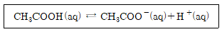
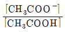
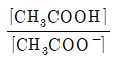
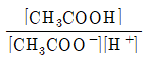
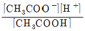
(정답률: 75%)
24. 원자분광법에서 사용되는 시료도입 방법 중 고체형태의 시료에 적용시킬 수 없는 방법은?
- 기체 분무화
- 전열 증기화
- 레이저 증발
- 아크 증발
(정답률: 69%)
25. 원자 분광법에 사용되는 분무기 중 분무효율이 가장 좋은 것은?
- 중심관(concentric) 분무기
- 바빙톤(Barbington) 분무기
- 초음파(ultrasonic) 분무기
- 가로-흐름(cross-flow) 분무기
(정답률: 70%)
26. 25℃에서 아연(Zn)의 표준전극전위는 다음과 같을 때 0.0600M Zn(NO3)2 용액에 담겨있는 아연 전극의 전위(V)는?
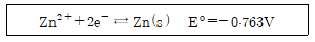
- -0.763
- -0.799
- -0.835
- -0.846
(정답률: 66%)
27. Mg2+이온과 EDTA와의 착물 MgY2-를 포함하는 수용액에 대한 다음 설명 중 틀린 것은? (단, Y4-는 수소이온을 모두 잃어버린 EDTA의 한 형태이다.)
- Mg2+와 EDTA의 반응은 킬레이트 효과로 설명할 수 있다.
- 용액의 pH를 높일수록 해리된 Mg2+이온의 농도는 감소한다.
- 해리된 Mg2+이온의 농도와 Y4-의 농도는 서로 같다.
- EDTA는 산-염기 화합물이다.
(정답률: 57%)
28. 난용성 고체염인 BaSO4로 포화된 수용액에 대한 설명으로 틀린 것은?
- BaSO4 포화수용액에 황산 용액을 넣으면 BaSO4가 석출된다.
- BaSO4 포화수용액에 소금을 첨가하면 BaSO4가 석출된다.
- BaSO4의 Ksp는 온도의 함수이다.
- BaSO4포화수용액에 BaCl2 용액을 넣으면 BaSO4가 석출된다.
(정답률: 68%)
29. 다음 중 표준 상태에서 가장 강한 산화제는?
- Cl2
- HNO2
- H2SO3
- MnO2
(정답률: 46%)
30. 완충용액과 완충용량에 대한 설명으로 틀린 것은?
- 완충용액은 약산과 짝염기가 공존하기 때문에 pH 변화가 적다.
- 완충용액은 약산과 짝염기의 비율이 1:1일 경우 최대이다.
- 완충용량이 작을수록 용액은 pH 변화가 더 잘 견딘다.
- 완충용액의 pH는 용액의 이온세기에 의존한다.
(정답률: 70%)
31. 활동도계수(activity coefficient)에 대한 설명으로 옳은 것은?
- 이온의 전하가 같을 때 이온 크기가 증가하면 활동도계수는 증가한다.
- 이온의 크기가 같을 때 이온의 세기가 증가하면 활동도계수는 증가한다.
- 이온의 크기가 같을 때 이온의 전하가 증가하면 활동도계수는 증가한다.
- 이온의 농도가 묽은 용액일수록 활동도계수는 1보다 커진다.
(정답률: 42%)
32. 염이 녹은 수용액의 액성을 나타낸 것 중 틀린 것은?
- NaNO3 : 중성
- Na2CO3 : 염기성
- NH4Cl : 산성
- NaCN : 산성
(정답률: 54%)
33. 25℃, 0.100M KCl 수용액의 활동도계수를 고려한 pH는? (단, 25℃에서 H+와 OH-의 활동도계수는 각각 0.830, 0.760이며, 물의 이온화 상수는 1.00×10-14이다.)
- 6.82
- 6.90
- 6.98
- 7.00
(정답률: 47%)
34. CuN3(s) ⇄ Cu+(aq) + N3-(aq)의 평형 상수가 K1이고, HN3(aq) ⇄ H+(aq) + N3-(aq)의 평형 상수가 K2일 때, Cu+(aq) + HN3(aq) ⇄ H+(aq) + CuN3(s)의 평형 상수를 옳게 나타낸 것은?
- K2/K1
- K1/K2
- K1×K2
- 1/(K1+K2)
(정답률: 69%)
35. MnO4-서 Mn의 산화수는 얼마인가?
- +2
- +3
- +5
- +7
(정답률: 80%)
36. 표준전극전위(E°)의 특징을 설명한 것으로 틀린 것은?
- 전체 전지에 대한 표준전극전위는 환원전극의 표준전극전위에서 산화전극의 표준전극전위를 뺀 값이다.
- 반쪽반응에 대한 표준전극전위는 온도에 따라 변하지 않는다.
- 균형잡힌 반쪽반응물과 생성물의 몰수에 무관하다.
- 전기화학 전지의 전위라는 점에서 상대적인 양이다.
(정답률: 48%)
37. 루미네센스(Luminescence) 방법의 특징이 아닌 것은?
- 검출한계가 낮다.
- 정량분석을 할 수 있다.
- 흡수법에 비해 선형 농도측정범위가 좁다.
- 시료 매트릭스로부터 방해 효과를 받기 쉽다.
(정답률: 42%)
38. 갈바니 전지와 관련된 설명 중 틀린 것은?
- 갈바니 전지의 반응은 자발적이다.
- 전자는 전위가 낮은 전극으로 이동한다.
- 전지 전위는 양수이다.
- 산화 반응이 일어나는 전극을 anode, 환원 반응이 일어나는 전극을 cathode라 한다.
(정답률: 57%)
39. 어떤 염산 용액의 밀도가 1.19g/cm3이고 농도는 37.2wt%일 때, 이 용액의 몰농도를 구하는 식으로 옳은 것은? (단, HCl의 분자량은 36.5g/mol이다.)
- 1.19×0.372×1/36.5×103
- 1.19×0.372×1/36.5
- 1.19×0.72×36.5×1/103
- 1.19×0.372×36.5
(정답률: 69%)
40. 다음 중 가장 센 산화력을 가진 산화제는? (단, E°표준 환원 전위이다.)
- 세륨 이온(Ce4+, E°=1.44V
- 크롬산 이온(CrO42-, E°=-0.12V
- 과망간산 이온(MnO4-), E°=1.51V
- 중크롬산 이온(Cr2O72-), E°=1.36V
(정답률: 72%)
3과목: 화학물질 구조분석
41. 보호관(guard column)의 사용 및 특성에 대해 설명한 것으로 틀린 것은?
- 분석관 뒤에 설치한다.
- 분석관의 수명을 연장시킨다.
- 정지상에 비가역적으로 결합되는 시료성분을 제거한다.
- 보호관 충전물의 조성은 분석관의 것과 거의 같아야 한다.
(정답률: 61%)
42. 얇은 크로마토그래피(TLC)에 관한 설명으로 옳은 것은?
- TLC는 유기 화합물 합성에서 반응의 완결을 확인하는데 유용하게 이용되기도 한다.
- TLC에서는 머무름 인자를 얻는 것이 컬럼을 이용한 실험으로부터 얻는 것보다 어렵고 오래 걸린다.
- TLC에서는 용매의 이동 거리와 각 성분의 이동거리의 차를 지연 인자로 삼는다.
- TLC는 2차원(2-dimensional) 분리가 불가능하다.
(정답률: 50%)
43. 이온 선택성 막전극에서 막 또는 막의 매트릭스 속에 함유된 몇 가지 화학종들은 분석물 이온과 선택적으로 결합할 수 있어야 한다. 이 때 일반적인 결합의 유형이 아닌 것은?
- 이온교환
- 침전화
- 결정화
- 착물형성
(정답률: 44%)
44. FT- IR 검출기로 주로 사용되는 검출기는?
- 골레이(Golay) 검출기
- 볼로미터(Bolometer)
- 열전기쌍(thermocouple) 검출기
- 초전기(pyroelectric) 검출기
(정답률: 34%)
45. 질량 분석법에서는 질량-대-전하의 비에 의하여 원자 또는 분자 이온을 분리하는데 고진공 속에서 가속된 이온들을 직류 전압과 RF 전압을 일정 속도로 함께 증가시켜주면서 통로를 통과하도록 하여 분리하며 특히 주사시간이 짧은 장점이 있는 질량 분석기는?
- 이중 초점 분석기(double focusing spectrometer)
- 사중극자 질량분석기(quadrupole mass spectrometer)
- 비행시간 분석기(time-of-flight spectrometer)
- 이온-포착분석기(ion-trap spectrometer)
(정답률: 56%)
46. 중합체를 시차열법분석(DTA)을 통해 분석할 때 발열반응에서 측정할 수 있는 것은?
- 결정화 과정
- 녹는 과정
- 분해 과정
- 유리전이 과정
(정답률: 60%)
47. 저분해능 질량스펙트럼의 해석에 유용한 정보를 기술하였다. 타당한 것으로 짝지어진 것은?
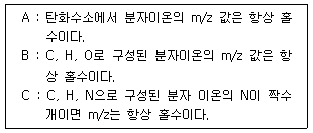
- A
- B
- B, C
- 옳은 것 없음
(정답률: 61%)
48. 표면분석에 있어서 자주 접하게 되는 문제는 시료 표면의 오염 문제이다. 이러한 시료를 깨끗이 하는 방법을 설명한 것으로 틀린 것은?
- 높은 온도에서 시료를 구움
- 전자총에서 생긴 활성 기체를 시료에 쪼여줌
- 여러 용매 속에 시료를 넣어 초음파를 사용하여 씻음
- 연마제를 사용하여 시료표면을 기계적으로 깎거나 닦아줌
(정답률: 53%)
49. 유리전극으로 pH 측정할 때 영향을 주는 오차의 요인이 아닌 것은?
- 높은 이온세기 용액의 오차
- 알칼리 오차
- 산 오차
- 표준완충 용액의 pH 오차
(정답률: 51%)
50. 모세관 전기이동 분리도 방식에 해당하지않는 것은?
- 모세관 띠 전기이동
- 모세관 겔 전기이동
- 모세관 등전 집중
- 모세관 변속 이동
(정답률: 46%)
51. 액체 크로마토그래피가 아닌 것은?
- 초임계유체 크로마토그래피(supercritical fluid chromatography)
- 결합 역상 크로마토그래피(bonded reversed-phase chromatography)
- 분자 배제 크로마토그래피(molecular exclusion chromatography)
- 이온 크로마토그래피(ion chromatography)
(정답률: 56%)
52. 전위차법에서는 전위 측정기(V-meter)와 측정용 전극의 내부저항 크기가 측정 오차를 결정하는 중요한 인자가 된다. 수용액에 용해된 CO2 농도 측정용 막전극(membrane electrode)이 있다. 조건을 갖춘 검액 시료에 이 전극을 넣고 전위를 측정하니 1.00V로 측정되었다. 용액이 나타내는 실제 전위(V)는? (단, 용액의 저항은 5.00Ω, 전극 내부저항은 5.00×107Ω, 측정 장치의 저항은 2.00×108Ω이다.)
- 0.02
- 0.20
- 0.80
- 1.00
(정답률: 28%)
53. 1H Nuclear Magnetic Resonance(NMR) 스펙트럼에서 CH3CH2CH2OCH3 분자는 몇 가지의 다른 화학적 환경을 가지는 수소가 존재하는가?
- 1
- 2
- 3
- 4
(정답률: 68%)
54. 질량분석법에서 시료의 이온화 과정은 매우 중요하다. 전기장으로 가속시킨 전자 또는 음으로 하전된 이온을 시료 분자에 충격하면 시료 분자의 양이온을 얻을 수 있다. 2가로 하전된 이온(질량 3.32×10-23kg)을 104V의 전기장으로 가속시켜 시료분자에 충격하려 할 때, 다음 설명 중 틀린 것은? (단, 전자의 전하는 1.6×10-19C이다.)
- 이 이온의 운동에너지는 3.2×10-15J이다.
- 이 이온의 속도는 1.39×104m/sec이다.
- 질량이 6.64×10-23kg인 이온을 이용하면 운동에너지는 2배가 된다.
- 같은 양의 운동에너지를 갖는다면 가장 큰 질량을 가진 이온이 가장 느린 속도를 갖는다.
(정답률: 54%)
55. 화합물 OH-CH2-CH2Cl의 적외선 스펙트럼에서 관찰되지 않은 봉우리의 영역은?
- 800cm-1
- 1700cm-1
- 2900~3000cm-1
- 3200cm-1
(정답률: 48%)
56. 열분석은 물질의 특이한 물리적 성질을 온도의 함수로 측정하는 기술이다. 열분석 종류와 측정방법을 연결한 것 중 잘못된 것은?
- 시차주사열량법(DSC) - 열과 전이 및 반응온도
- 시차열분석(DTA) - 전이와 반응온도
- 열중량분석(TGA) - 크기와 점도의 변화
- 방출기체분석(EGA) - 열적으로 유도된 기체생성물의 양
(정답률: 68%)
57. 전기화학분석법에서 포화칼로멜 기준전극에 대하여 전극 전위가 0.115V로 측정되었다. 이 전극 전위를 포화 Ag/AgCl 기준전극에 대하여 측정하면 얼마로 나타나겠는가? (단, 표준수소전극에 대한 상대전위는 포화칼로멜 기준전극 = 0.244V, 포화Ag/AgCl 기준전극 = 0.199V이다.)
- 0.16V
- 0.18V
- 0.20V
- 0.22V
(정답률: 61%)
58. 시차주사열량법(Differential Scanning Calorimetry; DSC)에서 중합체를 측정할 때의 열량변화와 가장 관련이 없는 것은?
- 결정화
- 산화
- 승화
- 용융
(정답률: 51%)
59. 신소재 AOAS의 열분해 곡선(TG)과 시차주사열계량법곡선(DSC)를 같이 나타낸 것이다. 이 곡선을 분석할 때 다음 중 옳은 설명은?
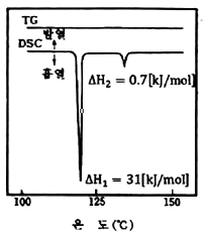
- AOAS는 비정질 고체로 일차 결정화 전이점이 118℃이고, 용융점이 135℃이다.
- AOAS는 액정(liquid crystal) 물질로 액정화 온도가 118℃이고 액화온도가 135℃이다.
- AOAS는 고분자로 유리전이점이 118℃이고 기화점이 135℃이다.
- 옳은 설명이 없다.
(정답률: 45%)
60. 질량분석기의 분해능에 관한 설명 중 틀린 것은?
- 사중극자 질량분석기는 unit mass 분해능을 가지고 있다.
- Sector Mass는 고분해능으로 0.001amu 근처까지 실질적으로 분해하여 측정할 수 있다.
- TOF는 이동 시간에 따른 분해를 하므로, 시간 분해능이 좋아져서 실질적으로 100,000이상의 분해능으로 측정할 수 있다.
- FT 질량분석기는 고분해능으로 일반적으로 1,000,000정도까지의 분해능을 얻을 수 있다.
(정답률: 50%)
4과목: 시험법 밸리데이션
61. X선 형광분석법(XRF; X-Ray Fluorescence)은 고체나 액체 시료에 X선을 조사했을 때 발생하는 형광을 이용해 정성분석을 하는 분석기기이다. XRF 분석 시 필요한 소모품으로 가장 거리가 먼 것은?
- Liquid cup and Thin film
- He gas
- XRF window
- Probe
(정답률: 58%)
62. 견뢰성(Ruggedness)의 정의는? (단, USP(United states pharmacopoeia)을 기준으로 한다.)
- 동일한 실험실, 시험자, 장치, 기구, 시약 및 동일 조건하에서 균일한 검체로부터 얻은 복수의 시료를 단기간에 걸쳐 반복시험하여 얻은 결과값들 사이의 근접성
- 측정값이 이미 알고 있는 참값 또는 허용 참조값으로 인정되는 값에 근접하는 정도
- 정상적인 시험 조건의 변화 하에서 동일한 시료를 시험하여 얻어지는 시험결과의 재현성의 정도
- 시험 방법 중 일부조건이 작지만 의도된 변화에 의해 영향을 받지 않고 유지될 수 있는 능력의 척도
(정답률: 48%)
63. 의약품의 시험방법 밸리데이션을 생략할 수 없는 경우는?
- 대한민국약전에 실려 있는 품목
- 식품의약품안전처장이 인정하는 공정서 및 의약품집에 실려 있는 품목
- 식품의약품안전처장이 기준 및 시험방법을 고시한 품목
- 원개발사 기준 및 시험방법이 있는 품목
(정답률: 62%)
64. 시료를 반복 측정하여 아래의 결과를 얻었다. 이 결과에 대한 90% 신뢰구간을 올바르게 계산한 것은? (단, One side Student의 t값은 90% 신뢰구간 : 1.533, 95% 신뢰구간 : 2.132 이다.)
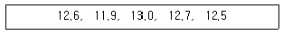
- 12.5 ± 0.04
- 12.5 ± 0.4
- 12.5 ± 0.02
- 12.5 ± 0.2
(정답률: 47%)
65. ICH Guideline Q2(R1)에 의거한 정확성 검증을 위해 측정해야 하는 최소 반복 횟수는?
- 1
- 3
- 6
- 9
(정답률: 55%)
66. 반복 데이터의 정밀도를 나타내는 것으로 관련이 적은 것은?
- 표준편차
- 절대오차
- 변동계수
- 분산
(정답률: 64%)
67. 대한민국약전상 유도결합 플라즈마 발광분광분석계의 분광기에 대한 성능평가를 위해 특정원소의 분석석 스펙트럼의 반치폭이 일정값(nm)이하로 규정하고 있다. 분광기 성능평가에 사용되는 원소와 파장으로 틀린 것은?
- 비소(As) - 193.696nm
- 망간(Mn) - 257.610nm
- 구리(Cu) - 324.754nm
- 바륨(Ba) - 601.581nm
(정답률: 53%)
68. A라는 회사의 세척검체 시험법 밸리데이션 절차를 수립하고자할 때, 보기 중 밸리데이션 항목에 대한 설명으로 옳지 않은 것은?
- 분석 대상물의 선택성(Selectivity)을 확인하는 방법으로 특이성을 검증할 수 있다.
- 범위는 직선성, 정확성 및 정밀성 시험 결과로 산정할 수 있다.
- 검출한계는 Signal to Noise가 2:1이상인지 확인한다.
- 직선성은 선형회귀분석을 실시하여 상관계수 R의 값으로 확인할 수 있다.
(정답률: 62%)
69. 정도관리에 대한 설명 중 틀린 것은?
- 상대차이백분율(RPD)은 측정값의 변이정도를 나타내며, 두 측정값의 차이를 한 측정값으로 나누어 백분율로 표시한다.
- 방법검출한계(Method Detection Limit)는 99% 신뢰수준으로 분석할 수 있는 최소농도를 말하는데, 시험자나 분석기기 변경처럼 큰 변화가 있을 때마다 확인해야한다.
- 중앙값은 최솟값과 최댓값의 중앙에 해당하는 크기를 가진 측정값 또는 계산값을 말한다.
- 회수율은 순수 매질 또는 시료 매질에 첨가한 성분의 회수 정도를 %로 표시한다.
(정답률: 50%)
70. 어떤 산의 pH가 5.53±0.02이라 할 때 이 산의 수소이온의 농도(M)와 불확정도는?
- (2.7±0.3)×10-6
- (2.8±0.2)×10-6
- (3.0±0.1)×10-6
- (2.8±0.2)×10-7
(정답률: 52%)
71. 다음의 설명에 해당하는 시험법은?
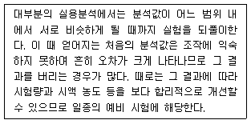
- blank test
- control test
- recovery test
- blind test
(정답률: 57%)
72. 밸리데이션의 시험방법을 개발하는 단계에서 고려되어야 하는 평가항목이며 분석조건을 의도적으로 변동시켰을 때의 시험방법의 신뢰성을 나타내는 척도로서 사용되는 평가항목은?
- 정량한계
- 정밀성
- 완건성
- 정확성
(정답률: 65%)
73. 특정 화합물의 분석 시 재현성을 확인하기 위해 6회 반복하여 측정한 값이 아래와 같을 때, 상대 표준편차(%)는?
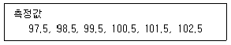
- 1.71
- 1.83
- 1.87
- 1.90
(정답률: 53%)
74. “log(1324)"를 유효숫자를 고려하여 올바르게 표기한 것은?
- 3.12
- 3.121
- 3.1219
- 3.12189
(정답률: 56%)
75. 정확성(accuracy)에 대한 설명으로 옳은 것은?
- 측정값이 일반적인 참값(true value) 또는 표준값에 근접한 정도
- 여러 번 채취하여 얻은 시료를 정해진 조건에 따라 측정하였을 때 각각의 측정값들 사이의 근접성
- 시험방법의 신뢰도를 평가하는 지표
- 분석대상물질을 선택적으로 평가할 수 있는 능력
(정답률: 71%)
76. 두 실험자가 토양에서 추출한 염화이온을 함유한 수용액을 질산은 용액으로 각각 세 번씩 적정하여 아래의 결과를 얻었다. 참값이 36.90mgcl-/g시료일 때 다음의 보기 중 옳은 것은?
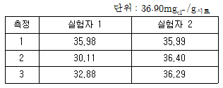
- 실험자 1이 더 정확한 분석을 실시하였다.
- 실험자 1의 표준편차 값이 더 작다.
- 실험자 2가 더 정확히 실험하였으나 정밀하진 못하다.
- 실험자 2가 더 정확하고 정밀한 분석을 실시하였다.
(정답률: 74%)
77. 표준물첨가법 실험 결과가 아래와 같고, 검출한계의 계산상수(k)를 3으로 할 때 검출한계값(μg/ml)은? (단, 시료의 바탕세기 값은 12(±2)이다.)(문제 오류로 가답안 발표시 1번으로 발표되었지만 확정답안 발표시 전항 정답처리되었습니다. 여기서는 가답안인 1번을 누르면 정답 처리 됩니다.)
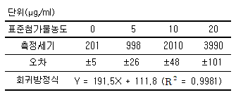
- 0.⑤
- 0.08
- 0.7
- 1.⑤
(정답률: 58%)
78. 분석 장비의 일반적인 검·교정 작성 방법에서 교정용 표준물질과 바탕시료를 사용해 그린 교정곡선의 허용범위로 옳은 것은?(오류 신고가 접수된 문제입니다. 반드시 정답과 해설을 확인하시기 바랍니다.)
- 곡선 검증은 수시교정표준물질을 사용하여 교정한다. 검증된 값의 5%이내에 있어야 한다.
- 교정검증표준물질은 사용해 교정하며 이는 교정용표준물질과 같은 것을 사용해야 한다.
- 분석법이 시료 전처리가 포함되어 있다면, 바탕시료와 실험실관리표준물질을 시료와 같은 방법으로 전처리하여 측정한다.
- 10개의 시료를 분석하고 분석 후에 수시교정표준물질을 가지고 다시 곡선을 점검한다. 검증값의 5%이내에 있어야 한다.
(정답률: 38%)
79. 미지 시료에 농도 등을 알고 있는 물질을 첨가시킨 다음 증가된 신호로부터 원래 미지 시료 중에 분석 문질이 얼마나 함유되어있는가를 측정하는 방법으로 시료의 매트릭스를 동일하게 만들기 어렵거나 불가능할 때 사용하는 분석법은?
- 표준물첨가법
- 내부표준법
- 외부표준법
- 내부첨가법
(정답률: 54%)
80. 자외선·가시광선 분광광도계의 장비사용설명서에 나타낸 장비 사용 순서를 바르게 나열한 것은?
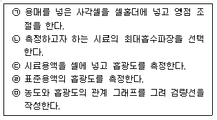
- ㉡ → ㉠ → ㉢ → ㉤ → ㉣
- ㉡ → ㉠ → ㉣ → ㉤ → ㉢
- ㉠ → ㉡ → ㉣ → ㉤ → ㉢
- ㉣ → ㉡ → ㉠ → ㉤ → ㉢
(정답률: 61%)
5과목: 환경·안전관리
81. 고체의 연소에 관한 다음 설명 중 옳지 않은 것은?
- 표면연소는 물질의 표면의 열분해로 생긴 가연성 가스가 산소와 반응하여 연소하는 것을 말한다.
- 분해연소는 물질의 열분해로 생긴 가연성 가스가 산소와 반응하여 연소하는 것을 말한다.
- 증발연소는 물질이 용융-증발하여 생긴 기체가 산소와 반응하여 연소하는 것을 말한다.
- 자기연소는 물질의 열분해로 산소가 발생시키면서 연소하는 것을 말한다.
(정답률: 50%)
82. 위험물안전관리법렬상 특정옥외탱크저장소로 분류되기 위한 액체위험물 저장 또는 취급 최대수량 기준은?
- 50000L 이상
- 100000L 이상
- 500000L 이상
- 1000000L 이상
(정답률: 50%)
83. 비누화 반응과 관련된 설명 중 틀린 것은?
- 트라이글리세라이드의 에스테르 결합을 수산화나트륨으로 처리하여 끊을 수 있다.
- 비누화 반응의 생성물은 글리세롤과 세 개의 지방산 나트륨의 염이다.
- 비누화 반응의 생성물인 비누는 극성인 머리와 무극성의 긴 꼬리로 구성되어 있다.
- 비누화 반응으로 얻은 비누 분자의 머리 부분에 기름이 들러붙어 제거될 수 있다.
(정답률: 61%)
84. 폐기물관리법령에 따라 사업장폐기물의 종류와 발생량 등을 특별자치시장, 특별자치도지사, 시장·군수·구청장에게 신고하여야 하는 ‘사업장폐기물배출자’의 기준으로 틀린 것은?
- 대기환경보전법에 따른 배출시설을 설치·운영하는 자로서 폐기물을 1일 평균 100킬로그램 이상 배출하는 자
- 폐기물을 1일 평균 300킬로그램 이상 배출하는 자
- 사업장폐기물 공동처리 운영기구의 대표자
- 건설공사 및 일련의 공사 또는 작업 등으로 인하여 폐기물을 10톤 이상 배출하는 자
(정답률: 42%)
85. 폐기물관리법령상 지정 폐기물에 해당 하지 않는 것은?
- 의료폐기물
- 폐수처리 오니
- 생활폐기물
- 폐유기용제
(정답률: 72%)
86. UN에서 정하는 화학물질의 분류 및 표시에 관한 세계조화시스템(GHS)의 대분류가 아닌 것은?
- 물리적 위험성(physical hazards)
- 화학적 위험성(Chemical hazards)
- 건강 유해성(Health hazards)
- 환경 유해성(Enviromental hazards)
(정답률: 56%)
87. 산화성가스를 나타내는 그림문자는?
(정답률: 72%)
88. 화재예방, 소방시설 설치 유지 및 안전관리에 관한 법령에 따른 소방안전관리대상물 중 특급 소방안전관리대상물의 기준에 해당하지않는 것은?
- 지하층을 제외한 층수가 50층 이상인 아파트
- 지하층을 포함한 층수가 30층 이상인 특정소방대상물(아파트를 제외한다)
- 지상으로부터 높이가 200미터 이상인 아파트
- 지상으로부터 높이가 100미터 이상인 특정소방대상물(아파트를 제외한다)
(정답률: 49%)
89. 수질오염공정시험기준에 의한 수질 항목별 시료를 채취 및 보존하기 위한 시료용기가 유리재질이 아닌 것은?
- 냄새
- 불소
- 페놀류
- 유기인
(정답률: 49%)
90. 화학물질관리법령상 사고대비 물질의 보관·저장 수량(kg) 기준이 틀린 것은?
- Formaldehyde : 200000
- Hydrogen Cyanide : 15000
- Methylhydrazine : 10000
- Phosgene : 750
(정답률: 44%)
91. 산·알칼리류를 다룰 때의 취급요령을 바르게 나타낸 것은?
- 과염소산은 유기화합물 및 무기화합물과 반응하여 폭발할 수 있으므로 주의를 한다.
- 산과 알칼리류는 부식성이 있으므로 유리용기에 저장한다.
- 산과 알칼리류를 희석할 때 소량의 물을 가하여 희석한다.
- 산이 눈이나 피부에 묻었을 때 즉시 염기로 중화시킨 후 흐르는 물에 씻어낸다.
(정답률: 54%)
92. 화학물질의 분류 및 표시 등에 관한 규정 및 화학물질의 분류·표시 및 물질안전보건자료에 관한 기준상 유해화학물질의 표시 기준에 맞지 않는 것은?
- 5개 이상의 그림문자에 해당하는 물질의 경우 4개만 표시하여도 무방하다.
- “위험”, “경고” 모두에 해당되는 경우 “위험”만 표시한다.
- 대상 화학물질이름으로 IUPAC 표준 명칭을 사용할 수 있다.
- 급성독성의 그림문자는 “해골과 X자형 뼈”와 “감탄부호” 두 가지를 모두 사용해야한다.
(정답률: 61%)
93. 폭발성반응을 일으키는 유해물질을 취급 할 때에 관한 설명이다. 틀린 것은?
- 과염소산은 가열, 화기접촉, 마찰에 의해 스스로 폭발할 수 있다.
- 과염소산, 질산과 같은 강한 환원제는 매우 적은 양으로도 강렬한 폭발을 일으킬 수 있다.
- 유기질소화합물은 가열, 충격, 마찰 등으로 폭발할 수 있다.
- 미세한 마그네슘 분말은 물과 산의 접촉으로 수소가스를 발행하고 발열반응을 일으킨다.
(정답률: 56%)
94. 화학물질의 분리 보관 요령 중 잘못된 것은?
- 인화성 액체 : 인화성 용액 전용 안전 캐비넷에 따로 보관
- 유기산 : 산 전용 안전 캐비넷에 따로 보관
- 금수성 물질 : 건조하고 서늘한 장소에 보관
- 산화제 : 목재 시약장에 따로 보관
(정답률: 72%)
95. 유해가스별 방독면 정화통 외부 측면의 표시색으로 잘못 연결된 것은?
- 암모니아용 - 녹색
- 아황산용 - 노랑색
- 황화수소용 - 백색
- 유기화합물용 - 갈색
(정답률: 56%)
96. 산업안전보건법령상 연구실에서 사용하는 안전보건표지의 형태 및 색체에 관한 설명 중 옳은 것은?
- 금지표지: 바탕-흰색, 기본모형-빨간색, 부호 및 그림-검은색
- 경고표지: 바탕-노란색, 기본모형-검정색, 부호 및 그림-검정색
- 지시표시: 바탕-흰색, 부호 및 그림-녹색 또는 바탕-녹색, 부호 및 그림-흰색
- 안내표시: 바탕-파란색, 기본모형-흰색, 부호 및 그림-흰색
(정답률: 54%)
97. 화학물질관리법령상 유해화학물질 취급시설 자체점검대상의 점검 항목으로 틀린 것은?
- 유해화학물질의 이송배관·접합부 및 밸브 등 관련 설비의 부식 등으로 인한 유출·누출 여부
- 유해화학물질의 보관용기가 파손 또는 부식되거나 균열이 발생했는지 여부
- 액체·기체 상태의 유해화학물질을 완전히 개방된 장소에 보관하고 있는지 여부
- 물 반응성 물질이나 인화성 고체의 물 접촉으로 인한 화재·폭발 가능성이 있는지 여부
(정답률: 71%)
98. A물질을 제조하는 공장의 근로자가 10시간 근무할 때 OSHA의 보정방법을 이용한 TWA-TLV(ppm)는? (단, A물질의 TWA-TLV는 15ppm이다.)
- 12
- 15
- 19
- 25
(정답률: 43%)
99. 다음 설명에 해당하는 화학물질은? (단, 화학물질관리법령을 기준으로 한다.)
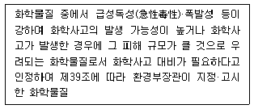
- 유독물질
- 허가물질
- 제한물질
- 사고대비물질
(정답률: 63%)
100. 화학 반응에 대한 설명 중 틀린 것은?
- 정촉매는 반응속도를 빠르게 하여 활성화 에너지를 감소시키며, 부촉매는 반응속도를 느리게 하고 활성화 에너지를 증가시킨다.
- 어떤 화학 반응의 평형상수는 화학평형에서 정반응과 역반응의 속도가 같을 때로 정의할 수 있다.
- 르 샤틀리에의 원리란 가역반응이 평형에 있을 때 외부에서 온도, 농도, 압력의 조건을 변화시키면 그 조건을 감소시키는 방향으로 새로운 평형이 이동한다는 법칙이다.
- 온도를 올리면 화학 평형의 이동 방향은 발열 반응 쪽으로 향한다.
(정답률: 60%)
이 설명은 표준 시료를 제조하는 방법 중 유일하게 HCl을 사용하고 있기 때문에 적합하지 않다. 표준 시료 제조에는 가능한 한 적은 수의 화학물질을 사용하는 것이 좋으며, HCl은 다른 화학물질과 함께 사용할 때 안정성 문제가 발생할 수 있기 때문이다.